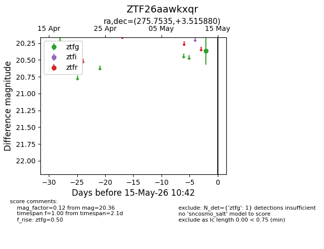
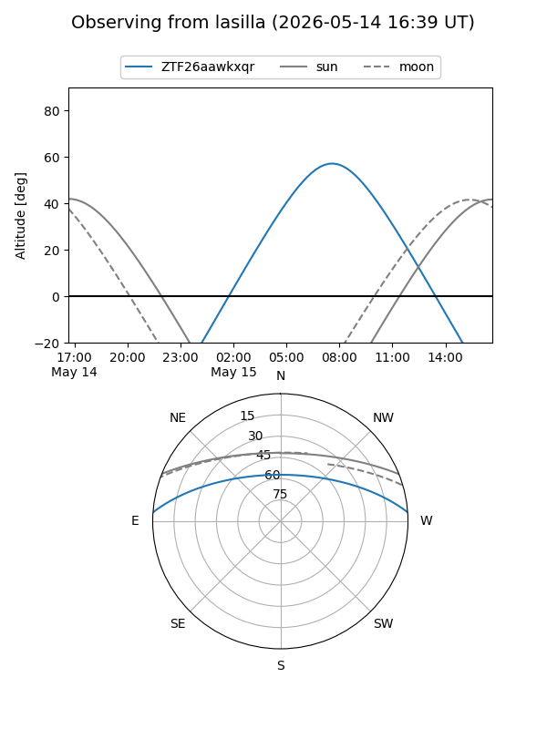
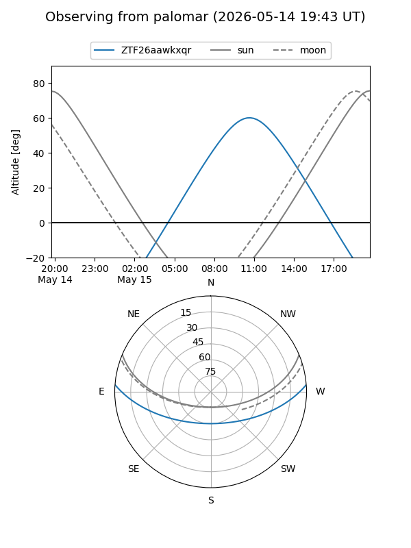

ZTF26aawkxqr
Target ZTF26aawkxqr at 2026-05-15 10:45
Aliases and brokers:
FINK: link
Lasair: link
ALeRCE: link
alt names
ZTF26aawkxqr (ztf,fink_ztf)
Coordinates:
equatorial (ra, dec) = 275.7535,+3.51588
equatorial (HMS+DMS) = 18:23:00.84,+03:30:57.17
galactic (l, b) = (32.8323,+7.92357)
Flags:
Photometry:
last ztfg=20.36
1 ztfg detections
Lightcurve

Visibility


Additional plots